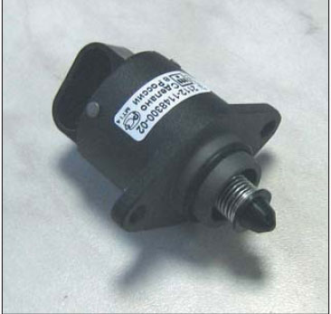
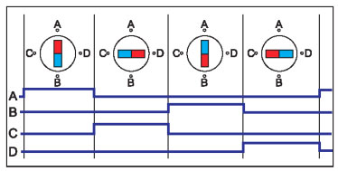
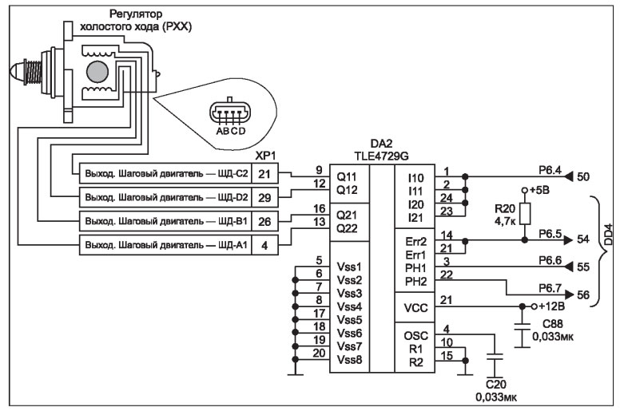

Устройство и ремонт электронных узлов системы зажигания инжекторных двигателей
Во время возникновения кодов ошибок Р0327, Р0328 (низкий/высокий уровни сигнала датчика детонации) следует проверить момент затяжки болта крепления, датчика детонации.
Регулятор холостого хода
Регулятор холостого хода (РХХ) служит для стабилизации оборотов холостого хода двигателя (см. рис. 4). Конструктивно РХХ представляет собой шаговый двигатель с двумя независимыми обмотками с подпружиненной конусной иглой. Вращение шагового двигателя с помощью червячно-анкерного механизма преобразуется в поступательное перемещение конусной иглы.

Рис. 4. Регулятор холостого хода
РХХ установлен на корпусе дроссельного патрубка в обводном канале.
В конструкции шагового двигателя РХХ включены постоянные магниты,которые в сочетании с обмотками фаз расположены на двух разных магнитопроводах, расположенных друг над другом.

Рис. 5. Диаграмма управления фазами шагового двигателя РХХ
На рис. 5 приведена временная диаграмма управления фазами шагового двигателя РХХ.
В момент включения фазы АВ создается электромагнитное поле которое позиционирует ротор относительно фазы А (0 ° ), а относительно фазы В (15°), не отключая фазу А, происходит включение фазы CD. При этом ротор устанавливается между полюсами фаз А и В (7,5°), и т.д.
При отключении питания РХХ ротор шагового двигателя устанавливается строго под полюсами статора одной из фаз.
Работу двигателя РХХ на автомобиле принято измерять в шаговом режиме, так, выдвинутое положение конусной иглы соответствует нулю шагов, а втянутое положение конусной иглы - 255 шагам.
Следует учесть, что при каждом включении зажигания контроллер выставляет конусную иглу в полностью выдвинутое положение (закрытое). Далее контроллер управляет работой РХХ, обеспечивая нормальную работу двигателя во всех режимах.
Схема подключения РХХ к контроллеру показана на рис. 6.

Рис. 6. Схема подключения РХХ к контроллеру
РХХ непосредственно соединен с контактами 4, 21, 26, 29 соединителя ХР1 ЭБУ.
Сопротивление обмоток шагового двигателя РХХ находится в пределах от 40 до 80 Ом.
Двигателем РХХ управляет драйвер DA2 типа TLE 4729G. В состав этой микросхемы входят усилители токов обмоток шагового двигателя РХХ, схема защиты от короткого замыкания, обрыва, замыкания на землю или бортовое питание автомобиля.
Как правило, неисправности РХХ проявляются в виде частичного или полного отсутствия холостого хода на всех режимах работы двигателя, самопроизвольного снижения оборотов двигателя, вплоть до его полной остановки при включении передачи, а также в начале движения.
Для выявления неисправностей РХХ следует проверить качество его крепления к корпусу дроссельного патрубка(наличие подсоса воздуха), качество соединений в колодке РХХ, проверить воздушные каналы системы холостого хода, при необходимости, с помощью мультиметра проверить целостность цепей между контактами разъема РХХ и контроллером.
Коды ошибок работы регулятора холостого хода следующие: Р0505 - ошибка в работе РХХ, Р0506 - низкие обороты холостого хода, Р0507 - высокие обороты холостого хода.
Нестабильная работа двигателя на холостом ходу может быть вызвана не только неправильной работой РХХ, но и другими факторами, например, загрязнением дроссельного патрубка, нарушением вентиляции картерных газов, неисправностью воздушного фильтра, датчика положения дроссельной заслонки и т.д.